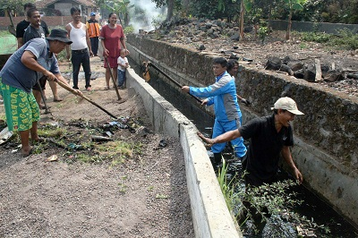
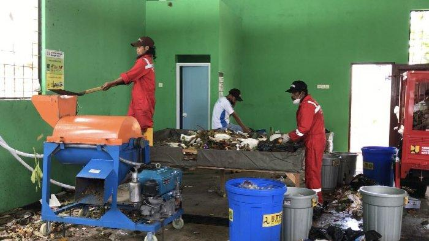
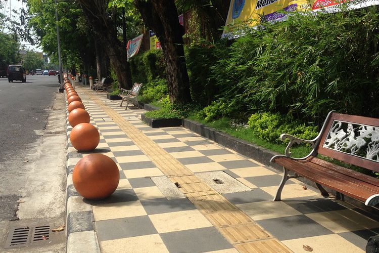
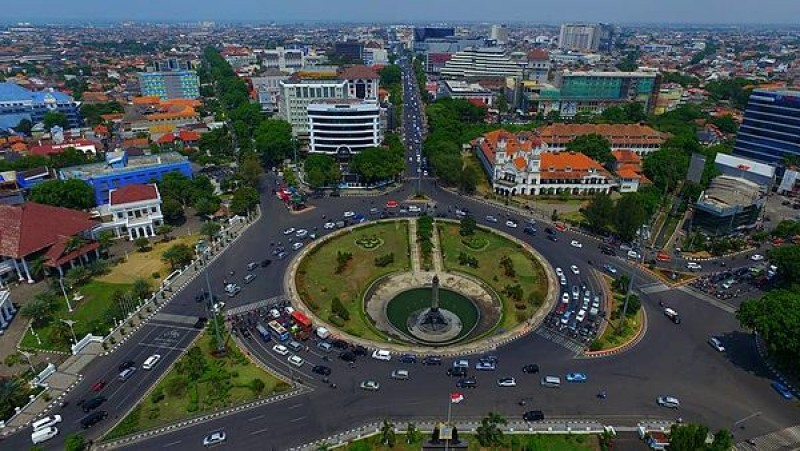

Program Peduli Lingkungan Masyarakat Kota Semarang

Menjaga Kebersihan Saluran Air
Program kebersihan pemerintah kota semarang berkomitmen membebaskan Semarang dari banjir tidak akan bisa dilakukan secara optimal tanpa partisipasi langsung dari masyarkat. Masyarakat telah menggelar kerja bakati rutin di wilayahnya masing-masing. Mereka membersihkan saluran-saluran air yang tersumbat sampah, seperti parit, di daerah resapan air, dsb. Selanjutnya, mereka menjaga agar saluran-saluran air tetap bersih agar tidak banjir ketika musim hujan. Mengantisipasi banjir bukan hanya tanggung jawab pemerintah, namun tanggung jawab bersama. Sebab, warga akan kerepotan sendri ketika banjir melanda.

Belajar Pengelolaan Sampah
Program penegelolaan sampah R3 di Kota Semarang mendapatkan dukungan yang baik dari masyarakat. Masyarakat Kota semarang benar-benar belajar bagaimana mengelola sampah dengan konsep R3. Selain sebagai kontribusi dalam perlombaan lingkungan bersih di Semarang, pembelajaran pengelolalaan sampah juga dilakukan demi tercapainya kualitas lingkungan yang bersih. Sebut saja salah satu golongan masyarakat seperti siswa-siswa sekolah. Ribuan siswa SD, SMP, dan SMA se-Kota Semarang mengikuti kegiatan edukasi pengelolaan sampah di Balaikota Semarang. Kegiatan edukasi ini meliputi pembuatan Landfilled Gas System (mengubah limbah sampah menjadi energi listrik 1,5 Megawatt) dan pembuatan instalasi pengolahan air limbah komunal. Pemberdayaan bank sampah dan pembentukan kelompok peduli lingkungan juga dilaksanakan dalam rangkaian kegiatan edukasi. Sebagai generasi penerus, para siswa di Kota Semarang ingin memahami cara pengelolaan sampah yang benar sejak dini.
Menjadi Kota Terbersih, Semarang Raih Penghargaan Adipura

Kota terbersih Semarang Setiap tahun, Kementrian Negara Lingkungan Hidup memberikan penghargaan Adipura terhadap kota-kota di Indonesia yang berhasil dalam melaksanakan program kebersihan dan pengelolaan lingkungan perkotaan.
Program Adipura pertama kali dilaksanakan pada tahun 1986. Meski pelaksanaannya sempat terhenti pada tahun 1998, Adipura kembali diadakan pada tahun 2002 dan terus dilaksanakan hingga kini.
Adapun kriteria penilaian terhadap kota-kota di Indonesia yang berhak mendapatkan penghargaan Adipura, yaitu:
Secara fisik, kota yang berhak mendapatkan penghargaan Adipura adalah kota yang bersih dan teduh.
Secara non-fisik, yakni bagaimana pengelolaan lingkungan kota yang dilakukan pemerintah kota (pemkot) meliputi: institusi, manajemen, dan daya tanggap.
Demi mewujudkan kriteria kota yang bersih dan pengelolaan lingkungan perkotaan yang baik, dibutuhkan kerjasama antara pemerintah kota dan masyarakat setempat.
Hal tersebut telah dilaksanakan dengan baik oleh pemerintah Kota Semarang. Sebab itulah, Semarang berkali-kali meraih penghargaan Adipura selama enam tahun berturut-turut. Termasuk penghargaan Adipura yang diraih Kota Semarang pada bulan Agustus, 2017 lalu.
Peran pemerintah Kota Semarang Dalam Program Adipura

Seperti yang diketahui, pemerintah Kota Semarang tidak lama ini menciptakan sebuah inovasi menarik pada salah satu lingkungan kumuh di kotanya, yaitu Kampung Gunung Brintik. Sebuah kampung kumuh di pinggiran sungai Semarang, tepatnya di kelurahan Wonosari yang kemudian disulap menjadi kampung warna-warni. Kampung tersebut kini dijuluki sebagai ‘Kampung Pelangi’. Selain menjadi bagian dari kota yang bersih, Kampung Pelangi juga menarik perhatian masyarakat, bahkan manca negara. Orang-orang berkunjung ke Kampung Pelangi untuk berwisata foto.
Gagasan untuk mengubah kampung kumuh menjadi kampung warna-warni yang menarik, memang bukanlah pertama kali di Indonesia. Kota-kota lain seperti Malang, Lubuklinggau, Balikpapan, juga memiliki tema kampung serupa.
Penghargaan Adipura yang diraih Kota Semarang, juga tak lepas dari peran pemerintah kota dalam pengelolaan sampah. Sampah-sampah di Kota Semarang diolah menjadi pembangkit listrik tenaga sampah dan gas metana. Hal tersebut menjadi suatu terobosan yang sangat bermanfaat bagi masyarakat Kota Semarang. Selain itu, pemerintah kota juga memiliki program menarik, yakni Sistem Pengendalian Kota Pintar. Pintar dalam berhemat energi.